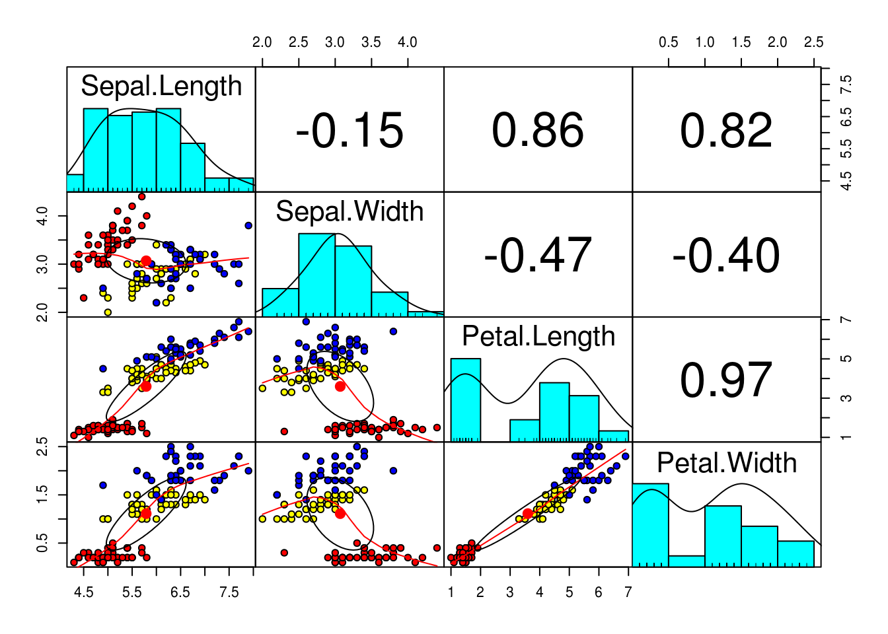
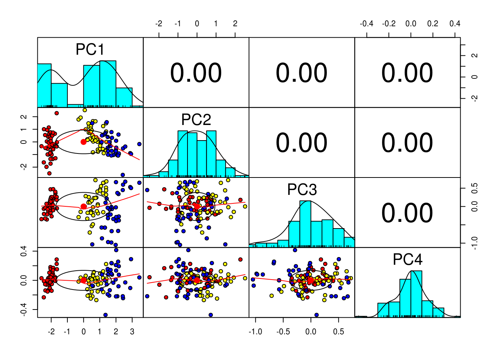
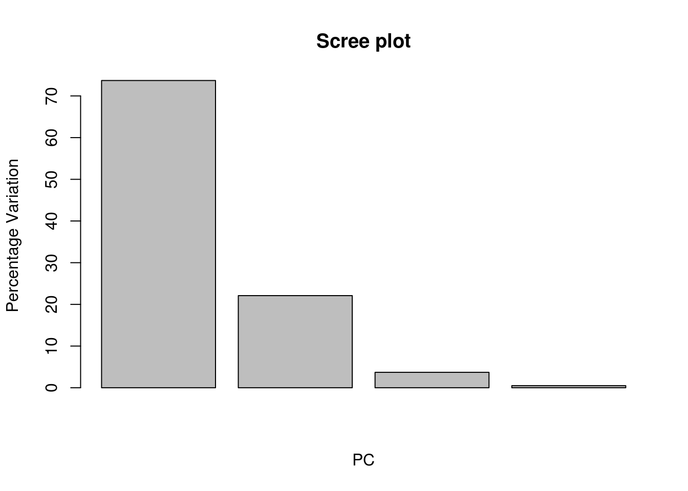
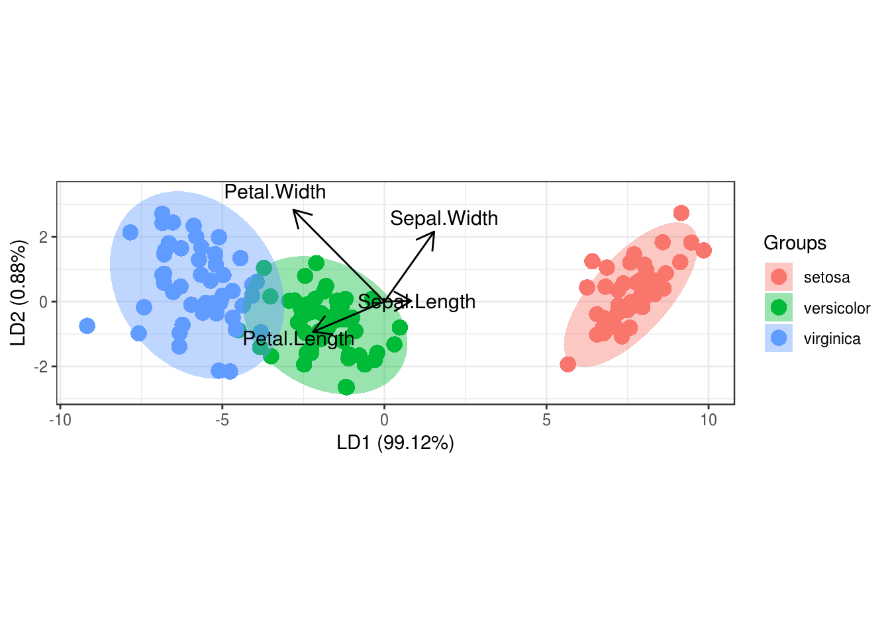

5 Dimension Reducing Algorithms
We have previously seen a few alternatives for feature selection. In this chapter we will look into methods that allow us to reduce the number of predictors with the use of some linear algebra. We will see how we can reduce problems of multiple dimensions into 2-D space, by plotting new axis and extrapolating the data on them. We will also discover ways to visually represent multidimensional data and perform classifications.
Dimension redaction is often performed when:
- The problem requires regression, classification, clustering
- We want to visualise data of multiple dimensions
- The data we have has multiple features that are highly correlated, and out of all the features, a few of them are the major drivers
- We do not have the response variable (unsupervised learning)
##Unsupervised learning
Up until now the data that we were analysed had been labeled, that is we knew the associated y/reaction variable. If we remember, the salaries associated with the baseball players were known, when analysing the Hitters dataset, similarly the price of the properties on the Boston dataset was also given. That helped us gain a clear understanding of the problem. We wonted to study the relationship between the features and the reaction variable, and use it to make predictions. Having the reaction variable readily available, also meant that were able to measure the performance of our models with ease, using methods such us cross-validation and confusion matrix. But what if our problem was something like this?
A company like Netflix wants to identify groups of users with similar taste, in order to improve their recommendations. What defines taste? We can look into the genre of the film, the users age and the users ratings, but there isn’t really a clearly defined problem or response variable. Similarly, they might want to classify movies depending on their popularity. How do we find What the predictors that make a movie popular, and what do we classify as popularity?
A researcher wants to group patients that have a rare disease using their gene expressions, symptoms and recovery progress. This will allow him to conduct his studies easier and treat each patient more effectively depending on their variation of the studied attributes. We do not know what or how many groups, this classification will result into, neither do we know which of the attributes collected are useful.
Unlike, our previous classification problem of bank account defaulting, where the outcome was either defaulted or not defaulted, in such cases we simply do not know what the outcome will be.
When the response is not clear, for example we do not know what categories will result from the data, we say that this is an unsupervised problem.
5.1 Principal Component Analysis (PCA)
PCA is an unsupervised machine learning algorithm, used for dimension reduction. Just as with supervised learning we will be trying to gain insight on our problem by studying the variations in the dataset, trying to explain them and use the explanations for grouping the data or making predictions. Often we are faced with datasets containing multiple predictors, which can be highly correlated, making it difficult to perform this analysis. PCA can reduce the number of variables and remove any multicollinearity effect, while maintaining the measures that explain most of of the variability in a dataset.
PCA will attempt to summarise the data, by projecting it in new axis. Each of those new axis will be a linear combination of the features in the original dataset, that results in a line closest to the observations. For example a one dimensional summary of the data, would be a line closest, on average, to all the data points (taking the Euclidean distance). A two dimensional summary would be a plane that is closest to the data points.
PCA will create as many of those ‘summary dimensions’ as there are features in the dataset, in order to explain all of the variation (unless there in not enough data to find all of them). However, usually the first few dimensions will be able to summarise the data quite well, explaining a significant percentage of the variation. So we choose to project the data in those fewer dimensions.
We have already mentioned that in order for ‘summary dimensions’ to be able to explain the data, they are a combination of the features in the original dataset. In an n-dimensional space the first principal component will follow the direction of the dimension which shows the most variation. For example if we had a 2-D scatterplot where the observations mostly followed a straight line, parallel to the x axis, we would see that most of the action is happening on the x axis, while there is little variation on the y axis. The first principal component would follow the direction the x-axis, maybe slightly rotated to capture some of the variation on the y axis.
Those ‘summary dimensions’ are called principal components, let’s how they are derived.
We swift the data so that the centre of the data points is at the origin of the axis (they are shifted without loosing the relative distances to each other). This means that the mean of the data is now zero. For your information, this is not required however, having a mean of zero makes the calculations later on easy, so it is generally preferred.
We find the best fit line between our data points, which are now centred. The best fit line, will be able to best describe our data (summarise it) and therefore it will become our fist principal component (PC1). This is done in a similar way to least squared distance in linear regression. However, since we are looking to find a vector (vectors always start from the origin, we want this since PC1 will become a new axis, it would be very unless if an axis did not start from the origin) we want this best fit line to pass through the origin. Because this is true instead of minimising the distance of our points to the best fitting line, we can instead maximise the distance of the projected (to the best fitting line) points to the origin. This distance is at a 90 degree angle from the distance of our points to the best fitting line, and since the distance of each point to the origin is always constant, they are inversely proportional (when the distance of our points to the best fitting line decreases, the distance from the projected points to the origin increases), from the Pythagorean theorem.
The form of the PC1 will be : \(y =\beta_1 x_1 + \beta_2 x_2 + \ldots + \beta_n x_n\), where \(x_1\) to \(x_n\), are the features on the original dataset.
The coefficients are called the loading scores and will show us which features had the most effect on the PC (the higher the absolute value of the coefficient the more influence that feature had).
3.We want the next PC to be a (again) a linear combination of all features that explains the most (of the remaining!) variance. We do not want the next PC to be correlated to the previous PC, we want it to only explain the remaining variance and avoid multicollinearity. This means that this new line will be perpendicular to the previous (and still needs to pass through the origin to become a new axis). Collinearity in a graphical representation can be identified when two lines are close to each other and/or have the same direction. When they are perpendicular to each other there is clearly no correlation.
We keep making Pc’s until all of the variation is explained.
We choose a few of those PCs, whose combination explains most of the variation, and we we project the data on them.
Warning: One thing to be careful of is using data of a different scale for some of the features. Data with higher scale will bias PCA to assume that most of the variation is happening in that axis. For example if we had scores of students in maths’ exam (from 1 to 10) and in history (from 1 to 100), the loading scores for history would be unreasonably hight. A standard practice to avoid this, is to divide all feature data by its standard deviation.
# This lab was created by professor Bharatendra Rai from University of Massachusetts Dartmouth (it is been slightly modified for our purposes)
# We are using a classic data set that comes with R, the iris dataset. It contains information about 3 different species of the iris flower, such us their pedal length and width. We want to know if we can use that information to cluster the different species and predict which species new data belongs to, from its attributes.
data("iris")
summary(iris)## Sepal.Length Sepal.Width Petal.Length Petal.Width
## Min. :4.300 Min. :2.000 Min. :1.000 Min. :0.100
## 1st Qu.:5.100 1st Qu.:2.800 1st Qu.:1.600 1st Qu.:0.300
## Median :5.800 Median :3.000 Median :4.350 Median :1.300
## Mean :5.843 Mean :3.057 Mean :3.758 Mean :1.199
## 3rd Qu.:6.400 3rd Qu.:3.300 3rd Qu.:5.100 3rd Qu.:1.800
## Max. :7.900 Max. :4.400 Max. :6.900 Max. :2.500
## Species
## setosa :50
## versicolor:50
## virginica :50
##
##
## # The iris dataset comes labeled, this means that we can use PCA in a 'supervised' format. It just allows us to split the data in two, and measure the performance of the model in predicting species on the testing and training data.
# Partition Data
set.seed(111)
# the ratio of the split is 80% for the training and 20% for the testing
ind <- sample(2, nrow(iris),
replace = TRUE,
prob = c(0.8, 0.2))
training <- iris[ind==1,]
testing <- iris[ind==2,]
# Scatter Plot & Correlationsinstall.packages("psych")library(psych)##
## Attaching package: 'psych'## The following object is masked from 'package:boot':
##
## logit## The following objects are masked from 'package:DescTools':
##
## AUC, ICC, SD## The following object is masked from 'package:car':
##
## logit## The following objects are masked from 'package:ggplot2':
##
## %+%, alpha# We can see that the data is highly correlated, especially petal.Length and petal.Width (almost 1!), this makes it a good candidate for PCA even tho we do not have that make dimensions
pairs.panels(training[,-5],
gap = 0,
bg = c("red", "yellow", "blue")[training$Species],
pch=21)
# Principal Component Analysis with prcomp()
pc <- prcomp(training[,-5],
center = TRUE,
scale. = TRUE)
# we can see the loading values for each PC
summary(pc)## Importance of components:
## PC1 PC2 PC3 PC4
## Standard deviation 1.7173 0.9404 0.38432 0.1371
## Proportion of Variance 0.7373 0.2211 0.03693 0.0047
## Cumulative Proportion 0.7373 0.9584 0.99530 1.0000# As we would expect there is zero correlation between the PCs (Orthogonality of PCs), so we are good to go
pairs.panels(pc$x,
gap=0,
bg = c("red", "yellow", "blue")[training$Species],
pch=21)
# Scree plot can show us how much of the variation in the data set is explained by each PC
pcVar <- pc$sdev^2
pcaVarPercentage <- round(pcVar/sum(pcVar)*100,1)
# we can see that most of the variation can be explained by just the first 2 PCs
barplot(pcaVarPercentage, main="Scree plot", xlab="PC", ylab = "Percentage Variation")
# We will now project our data in those two Pc's# Bi-Plot
install.packages("devtools")
devtools::install_github("vqv/ggbiplot")library(ggbiplot)## Loading required package: plyr## -------------------------------------------------------------------------## You have loaded plyr after dplyr - this is likely to cause problems.
## If you need functions from both plyr and dplyr, please load plyr first, then dplyr:
## library(plyr); library(dplyr)## -------------------------------------------------------------------------##
## Attaching package: 'plyr'## The following objects are masked from 'package:dplyr':
##
## arrange, count, desc, failwith, id, mutate, rename, summarise,
## summarize## Loading required package: scales##
## Attaching package: 'scales'## The following objects are masked from 'package:psych':
##
## alpha, rescale## Loading required package: grid#we can see that PCA has done a very good gob of grouping iris of the same species using only 2 dimensions
#the red arrows help us understand how PC1 and PC2 are derived, we can use them to approximate the properties of each feature
g <- ggbiplot(pc,
obs.scale = 1,
var.scale = 1,
groups = training$Species,
ellipse = TRUE,
circle = TRUE,
ellipse.prob = 0.68)
g <- g + scale_color_discrete(name = '')
g <- g + theme(legend.direction = 'horizontal',
legend.position = 'top')
print(g)
# Prediction with Principal Components
# contains predictions of species for the training data
trg <- predict(pc, training)
trg <- data.frame(trg, training[5])
tr## function (m)
## {
## if (!is.matrix(m) | (dim(m)[1] != dim(m)[2]))
## stop("m must be a square matrix")
## return(sum(diag(m), na.rm = TRUE))
## }
## <bytecode: 0x680e168>
## <environment: namespace:psych># contains predictions of species for the testing data
tst <- predict(pc, testing)
tst <- data.frame(tst, testing[5])
# Multinomial Logistic regression with First Two PCs
library(nnet)
trg$Species <- relevel(trg$Species, ref = "setosa")
mymodel <- multinom(Species~PC1+PC2, data = trg)## # weights: 12 (6 variable)
## initial value 131.833475
## iter 10 value 20.607042
## iter 20 value 18.331120
## iter 30 value 18.204474
## iter 40 value 18.199783
## iter 50 value 18.199009
## iter 60 value 18.198506
## final value 18.198269
## convergedsummary(mymodel)## Call:
## multinom(formula = Species ~ PC1 + PC2, data = trg)
##
## Coefficients:
## (Intercept) PC1 PC2
## versicolor 7.2345029 14.05161 3.167254
## virginica -0.5757544 20.12094 3.625377
##
## Std. Errors:
## (Intercept) PC1 PC2
## versicolor 187.5986 106.3766 127.8815
## virginica 187.6093 106.3872 127.8829
##
## Residual Deviance: 36.39654
## AIC: 48.39654# Confusion Matrix & Misclassification Error - training
p <- predict(mymodel, trg)
tab <- table(p, trg$Species)
tab##
## p setosa versicolor virginica
## setosa 45 0 0
## versicolor 0 35 3
## virginica 0 5 321 - sum(diag(tab))/sum(tab)## [1] 0.06666667# Confusion Matrix & Misclassification Error - testing
p1 <- predict(mymodel, tst)
tab1 <- table(p1, tst$Species)
tab1##
## p1 setosa versicolor virginica
## setosa 5 0 0
## versicolor 0 9 3
## virginica 0 1 121 - sum(diag(tab1))/sum(tab1)## [1] 0.13333335.2 Linear Discriminant Analysis (LDA)
Linear discriminant analysis is very similar to PCA, however it is a supervised method. When we feed data to LDA, we know beforehand what categories we are looking to group, and each observation is labeled. LDA makes use of this additional information and when it performs dimension reduction, it can achieve better separation of the categories.
We can use LDA to summarise multidimensional data in a 2-D graph, without having to compromise important information from the various attributes. This can show us how effective current attributes are in grouping the data and what their relationship is.
Like PCA, LDA creates new axis, by combining the existing features and projects the data points on them. LDA tries to find an axis which satisfies two conditions. First, when the data is projected on the new line, the distance between the means of the categories (the values the response takes on) is maximised. The further away the means of two categories are the more separated they will be, since the mean is where most of the data for each category is usually concentrated on. Secondly, their standard deviation is minimised. This is how scattered the data will be when projected on the best fit line (the more concentrated the data for each category is on its own mean, the better the separation will be).
When we have 2 dimensional data (data with 2 features \(a\) and \(b\)), the function that will produce the best single axis for that data to be projected on, would be the result of maximising the following function:
\(\frac{(\mu_a - \mu_b)^2}{\sigma_a^2 + \sigma_b^2}\)
If we had more than two dimensions in the original data, instead of taking each and every combination of distances that need to be maximised we perform the following steps:
- Find a central point to all the data \(C_all\)
- Find a central point for each category of the data \(C_a\), \(C_b\) …
- Compute the distance \(d\) for each \(C_a\), \(C_b\) … to \(C_all\) (defined as their squared difference)
The function we will be looking to maximise would become as fallowing:
\(\frac{d_a + d_b + d_c ...}{\sigma_a^2 + \sigma_b^2 + \sigma_c^2}\)
LDA will always result in two axis that achieve the most separation
data("iris")
library(MASS)
linear <- lda(Species ~., iris)
# Proportion of trace, shows the percentage of separation achieved by each axis
# we see that LD1 separates the data almost perfectly
linear## Call:
## lda(Species ~ ., data = iris)
##
## Prior probabilities of groups:
## setosa versicolor virginica
## 0.3333333 0.3333333 0.3333333
##
## Group means:
## Sepal.Length Sepal.Width Petal.Length Petal.Width
## setosa 5.006 3.428 1.462 0.246
## versicolor 5.936 2.770 4.260 1.326
## virginica 6.588 2.974 5.552 2.026
##
## Coefficients of linear discriminants:
## LD1 LD2
## Sepal.Length 0.8293776 0.02410215
## Sepal.Width 1.5344731 2.16452123
## Petal.Length -2.2012117 -0.93192121
## Petal.Width -2.8104603 2.83918785
##
## Proportion of trace:
## LD1 LD2
## 0.9912 0.0088# we can see the coefficients for the two lines (our new axis), that were created by LDA
# the coefficients will show how each attribute affected each axis
linear$scaling## LD1 LD2
## Sepal.Length 0.8293776 0.02410215
## Sepal.Width 1.5344731 2.16452123
## Petal.Length -2.2012117 -0.93192121
## Petal.Width -2.8104603 2.83918785install.packages('devtools')library(devtools)devtools::install_github('fawda123/ggord')library(ggord)
# we can see that the separation using LDA is much better than with PCA
p <- ggord(linear, iris$Species)
p